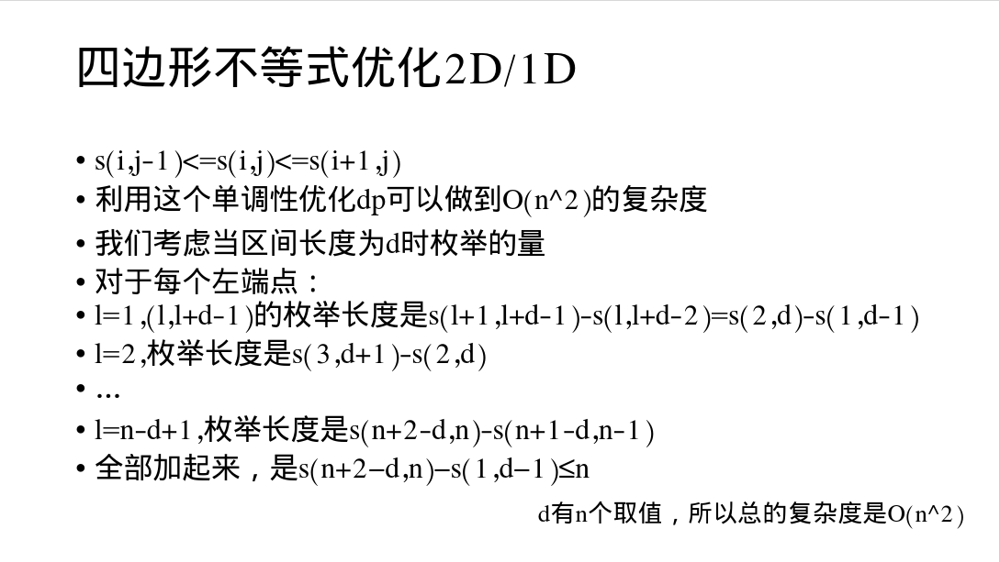

等和线：在线段 \(AB\) 上取一点 \(M\)，使得 \(\vec{AB}=\lambda \vec{AM}\)。在 \(AB\) 上方任取一点 \(P\)，则有 \(\vec{PM}=(1-\lambda) \vec{PA}+\lambda \vec{PB}\)。
什么是 xD/yD DP
即 DP 数组共有 \(x\) 维，一次转移复杂度为 \(O(n^y)\)。
为什么要给一句话单开一个标题
下面设通式 \(f_i=\max\left\{f_j+w(i,j)\right\}\)。
单调队列优化 DP
\(w(i,j)\) 仅包含 \(i,j\) 的最高一次项。
- 如果要求 \(j\in [1,i]\)，前缀最小值即可。
- 若 \(j\) 的取值范围在到处乱动，可以写 DS =_=
若 \(j\) 的取值范围 \([l,r]\) 随着 \(i\) 增大而 \(l,r\) 都不减小，那么可以使用单调队列。
顺带一提，和这种的单调队列用法相似的『单调栈』主要在斜优里出现。
具体过程被 grizzly bear 吃掉了 
例：单调队列优化多重背包
朴素的多重背包式子是 \(f_{i,j}=\max\left\{f_{i-1,j-k\times v_i}+k\times w_i\right\}\)，因为 \(i\) 和整个式子无关，所以是关于 \(j\) 的 1D/1D。
为了套用单调队列，需要把查询的项变成连续的。发现 \(j-k\times v_i\) 和 \(j\) 关于 \(v_i\) 同余；且随着 \(k\) 的增大，查询的位置不断移动 \(v_i\)。那么不妨把所有 \(j\) 按照模 \(v_i\) 的余数分开做。具体地，不妨设 \(j=a\times v_i+b\)，将 \(j-k\times v_i\) 替换为余数写法，那么有：
\[ \begin{aligned} f_{i,j}&=\max\{f_{i-1,x\times v_i+b}+(a-x)\times v_i\}\\ &=\max\{f_{i-1,x\times v_i+b}-x\times v_i\}+a\times v_i \end{aligned} \]
限制 \((a-x)\) 的取值不超过物品数，在不同模数下按 \(x\) 从小到大将 \(j\) 这一维进行单调队列优化即可。容易发现会不重不漏枚举所有体积；复杂度 \(O(nV)\)。
斜率优化 DP
若 \(w(i,j)\) 种含有 \(i,j\) 的交叉项，可以考虑斜优。
具体过程，（如果你愿意），可以看这篇 四年半前的博客。
关于符号等问题，分享一下我的做法：
单调队列维护：适用于符号和右侧斜率要求单调性相反的情况。
- 首先，讨论队头维护。不妨假设 \(a\) 为队头第二个元素，\(b\) 为队头第一个元素。
- 如果队头 \(b\) 需要被弹出，说明 \(a\) 优于 \(b\)；假设式子要求 max，则用 \(a\) 转移得到的答案 > 用 \(b\) 转移得到的答案。
- 化式子，注意 \(a>b\)；且负数乘除要变号。
最后得到的式子中间的不等号就决定了需要维护的斜率单调情况。以此决定队尾维护方式即可。
注意这个式子的不等号体现的是弹出条件；保留条件和其相反
单调栈维护：适用于符号和右侧斜率要求单调性相同的情况；需要清楚，维护合法性、维护单调和取答案都在栈顶进行。
- 首先，都知道要用单调栈了，说明斜优形式已经被化出来了；以此维护合法性即可。
- 维护一个从底到顶，『优』得越来越小的斜率序列。找到从更优到更劣的临界点，更新答案。
啊，果然高中文化学科是非常有用的。算是明白为什么我小学 / 初中基本没弄懂过斜优，而旁边的大佬已经在乱杀了 
现在假设正在维护一个上凸包，可以进行一些思考：
四边形不等式优化 DP
关于四边形不等式
对于代价矩阵 \(w\) 和定义域内 \(\forall\,a\le b\le c\le d\)，若 \(w(a,d)+w(b,c)\ge w(a,c)+w(b,d)\)，认为 \(w\) 满足四边形不等式。简记为重叠大于交叉。
命名来源是四边形对角线之和大于对边之和；将恒大于改为恒小于也能得到相似的性质。
就会发现单调队列优化和斜优其实是四边形不等式的特化，导致它们可以少一个 log。
性质
用于证明：
- 对于任意 \(c\le l\le r\)，若 \(w(l-c,r+c) + w(l,r)\le w(l-c,r)+ w(l,r+c)\)，则 \(w\) 满足四边形不等式。
用于题目：
- 性质一：若 \(f_i\) 满足四边形不等式（或其反式），那么最优决策点 \(p_i\) 与 \(i\) 有单调关系。
- 性质二：当 \(i\) 变化时，每个 \(j\) 带来贡献的相对大小 rank 不变。亦作：若 \(j_1\) 相对于 \(j_2\) 对 \(i\) 更优，对于任意 \(i'\)，\(j_1\) 相对于 \(j_2\) 对 \(i'\) 更优。
在优化 DP 之前
首先我必须要提一嘴。由于我第一次接触『四边形不等式』是在四年前，看到『石子合并的 \(n^2\) 做法』时。然而，这一题的 DP 本身有一个特殊性质，即贡献是一个以决策点为极值的凸函数；这直接导致我误以为这是四边形不等式本身带来的性质，导致我在理解上浪费了很多时间。四边形不等式带来的性质，只有上述两条！
当然这也告诉我们，如果你发现『贡献是一个以决策点为极值的凸函数』，你就可以用类似石子合并中的线性转移完成问题。『满足四边形不等式』并不能等价于『决策单调性』。决策单调性并不具备性质二。
也就是说，如果只满足决策单调性，只有最优决策点是单调的，但贡献函数随着 \(i\) 的变化，其形状会有很大的变动。
优化 DP：分治
主要适用于 \(f_{i}=g_j+w(j,i)\) 的场景，其中 \(g\) 是与 \(f\) 无关的函数。
对于分治范围 \([l,r]\) 和其决策点范围 \([L_p,R_p]\)，首先把暴力 \(mid\) 的决策点 \(p_{mid}\) 找出来。
接着对于 \([l,mid)\) 和 \((mid,R]\)，分别在 \([L_p,p_{mid}]\) 和 \([p_{mid},R_p]\) 里找决策点（注意两边都是闭的）。递归地做。
这时候你肯定就会怀疑了，主播主播，虽然你的区间每次在减半，但决策点范围并不是均分的，还会被共用，复杂度真的对吗？
对的兄弟，对的。观察搜索树，你会发现虽然 \(p_{mid}\) 会被给两个儿子共用，但是在任何一层中，被重复经过的点只会出现在两个区间的交界处。也就是说每整层大概遍历 \(2n\) 次。是不是很对了。
例：Yet Another Minimization Problem
https://codeforces.com/problemset/problem/868/F
我的天哪！是罕见的四级标题！
笑点解析：这个人因为懒得写 CSS 所以只写了经常用的 h2 和 h3 的样式，现在迫不得已用 h4 被倒逼去写了 h4 的 CSS。
发现 \(k\le 20\)，所以可以不用写 WQS 二分。令 \(f_{i,j}\) 表示第 \(i\) 段分在 \(j\) 处的代价，那么有 \(f_{i,j}=\min\{f_{i-1,l}+w(l+1,j)\}\)，分治解决。
接着发现问题：\(w(l+1,j)\) 并不能很快地求出来；然后注意到这个代价的形式很莫队（其实在看到这个题的时候就会有莫队的想法），考虑使用莫队移动端点的方式解决问题。由于分治中查询的区间两端单增，每层的总移动次数是 \(O(n)\) 的，总复杂度就是 \(O(nk\log n)\) 的。
#include <bits/stdc++.h>
const long long inf = 1e12;
int main() {
#ifdef ONLINE_JUDGE
std::ios::sync_with_stdio(false);
std::cin.tie(nullptr), std::cout.tie(nullptr);
#else
std::freopen(".in", "r", stdin);
std::freopen(".out", "w", stdout);
#endif
int n, k;
std::cin >> n >> k;
std::vector<int> a(n + 1);
for (int i = 1; i <= n; ++i)
std::cin >> a[i];
std::vector<long long> cnt(n + 1);
std::vector<std::vector<int> > p(k + 1, std::vector<int> (n + 1));
std::vector<std::vector<long long> > f(k + 1, std::vector<long long> (n + 1, inf));
auto w = [&](int l, int r) {
static int L = 1, R = 0;
static long long res = 0ll;
for (; L > l; --L, res -= cnt[a[L]] * (cnt[a[L]] - 1) / 2, ++cnt[a[L]], res += cnt[a[L]] * (cnt[a[L]] - 1) / 2);
for (; R > r; res -= cnt[a[R]] * (cnt[a[R]] - 1) / 2, --cnt[a[R]], res += cnt[a[R]] * (cnt[a[R]] - 1) / 2, --R);
for (; R < r; ++R, res -= cnt[a[R]] * (cnt[a[R]] - 1) / 2, ++cnt[a[R]], res += cnt[a[R]] * (cnt[a[R]] - 1) / 2);
for (; L < l; res -= cnt[a[L]] * (cnt[a[L]] - 1) / 2, --cnt[a[L]], res += cnt[a[L]] * (cnt[a[L]] - 1) / 2, ++L);
return res;
};
f[0][0] = 0ll;
for (int t = 1; t <= k; ++t) {
std::function<void(int, int, int, int)> calc = [&](int l, int r, int lp, int rp) {
if (l > r)
return;
if (l == r) {
for (int i = lp; i <= rp && i < l; ++i)
if (f[t - 1][i] + w(i + 1, l) < f[t][l])
f[t][l] = f[t - 1][i] + w(i + 1, l), p[t][l] = i;
return;
}
int mid = (l + r) >> 1;
for (int i = lp; i <= rp && i < mid; ++i)
if (f[t - 1][i] + w(i + 1, mid) < f[t][mid])
f[t][mid] = f[t - 1][i] + w(i + 1, mid), p[t][mid] = i;
calc(l, mid - 1, lp, p[t][mid]), calc(mid + 1, r, p[t][mid], rp);
return;
};
calc(1, n, 0, n - 1);
}
std::cout << f[k][n] << '\n';
return 0;
}优化 DP：单调数据结构
有的时候会出现 \(f_{i}=f_{j}+w(j,i)\) 的结构，也就是 \(f\) 的取值与自己有关。
这种情况我们通常选择填表法，求出 \(f_i\) 后找到 \(i\) 是哪些点的最优决策（那么显然这些点是一段连续区间）。用 \((i,l_i,r_i)\) 这个三元组表示当前算出来的 \(i\) 管辖的范围。
这是什么意思呢？结合性质二，每当我们手上拿到一个新的 \(i\)，那么推出来其管辖范围右端点就会是 \(n\)。接着想办法找到左端点，同样利用性质二，二分出最靠左的一个 \(j\)，满足之前算出来的决策点没有 \(i\) 优，那么 \([j,n]\) 就是当前条件下 \(i\) 的管辖范围。
在队列里加入当前版本的整个三元组序列就可以方便地完成这个过程。为寻找当前元素的答案，需要将队头上，管辖范围完全早于当前元素的弹出去。由于维护的过程和单调队列很像，所以也有人直接把这里的队列叫单调队列。
视题目不同，也可能用到单调栈，也有可能不用二分（例如满足前两种特化的情况）。goto Yakiniku Restaurants。
例：诗人小G
https://www.luogu.com.cn/problem/P1912
我觉得给出字符串内容的唯一价值是让出题人欣赏白日依山尽
令 \(f_{j}\) 为某一行分在第 \(j\) 句处的代价，那么有 \(f_{j}=\min\limits_{k<j}\left\{f_{k}+|(s_j-s_k+j-k-1)-L|^P\right\}\)。
那么就可以考虑单调队列 + 二分了。需要注意无穷大之间的大小比较，我写这个写红温了，直接用指数项相对大小来代替了，似乎可以过。
#include <bits/stdc++.h>
const long long inf = 1000000000000000001ll;
int main() {
#ifdef ONLINE_JUDGE
std::ios::sync_with_stdio(false);
std::cin.tie(nullptr), std::cout.tie(nullptr);
#else
std::freopen("P1912_2.in", "r", stdin);
std::freopen(".out", "w", stdout);
#endif
int T;
for (std::cin >> T; T--; ) {
int n, l, p;
std::cin >> n >> l >> p;
long long to;
switch (p) { // 会有精度问题
case 1:
to = 1e18;
break;
case 2:
to = 1e9;
break;
case 3:
to = 1e6;
break;
case 4:
to = 31622;
break;
case 5:
to = 3981;
break;
case 6:
to = 1e3;
break;
case 7:
to = 372;
break;
case 8:
to = 177;
break;
case 9:
to = 100;
break;
default:
to = 63;
break;
}
std::vector<int> s(n + 1);
std::vector<std::string> a(n + 1);
for (int i = 1; i <= n; ++i)
std::cin >> a[i], s[i] = (int)a[i].length();
std::partial_sum(s.begin() + 1, s.end(), s.begin() + 1);
struct node { int i, l, r; };
std::vector<node> q(n + 1);
int h = 0, t = -1;
q[++t] = { 0, 1, n };
auto qkp = [&](long long x, int y) {
if (x > to)
return inf;
auto res(1ll);
for (; y--; res *= x);
return res;
};
std::vector<int> pre(n + 1);
std::vector<long long> f(n + 1);
auto calc = [&](int k, int j) {
return std::min(inf, f[k] + qkp(std::abs(s[j] - s[k] + j - k - 1 - l), p));
};
auto less = [&](int k1, int j1, int k2, int j2) {
auto t1(calc(k1, j1)), t2(calc(k2, j2));
if (t1 == inf && t2 == inf)
return std::abs(s[j1] - s[k1] + j1 - k1 - 1 - l) < std::abs(s[j2] - s[k2] + j2 - k2 - 1 - l);
return t1 < t2;
};
for (int i = 1; i <= n; ++i) {
for (; h <= t && q[h].r < i; ++h);
f[i] = calc(q[h].i, i), pre[i] = q[h].i;
for (; h <= t && q[t].l > i && less(i, q[t].l, q[t].i, q[t].l); --t)
q[t - 1].r = q[t].r;
for (int l = std::max(q[t].l, i + 1), r = q[t].r, mid; l <= r; ) {
mid = (l + r) >> 1;
if (less(i, mid, q[t].i, mid))
r = q[t].r = mid - 1, q[t + 1] = { i, mid, n };
else
l = mid + 1;
}
if (q[t + 1].i == i)
++t;
}
if (f[n] >= inf)
std::cout << "Too hard to arrange" << '\n';
else {
std::cout << f[n] << '\n';
std::function<void(int)> print = [&](int x) {
if (x == 0)
return;
print(pre[x]);
for (int i = pre[x] + 1; i <= x; ++i) {
std::cout << a[i];
if (i != x)
std::cout << ' ';
}
std::cout << '\n';
return;
};
print(n);
}
std::cout << "--------------------";
if (T)
std::cout << '\n';
}
return 0;
}需要注意，本题也可以再加一个『恰好分 \(k\) 段』的限制，直接在外层套一个 WQS 二分就好了，参见 邮局 加强版 加强版。
2D/1D DP 优化
若存在 \(f(i,j)=\min\limits_{k<j} f(i-1,k)+w(k+1,j)\)，且 \(w\) 满足四边形不等式：
设 \(p(i,j)\) 为最优决策点，那么有 \(p(i,j)\le p(i,j+1)\le p(i+1,j+1)\)，亦作 \(p(i,j-1)\le p(i,j)\le p(i+1,j)\)。
此时可以 \(O(nm)\) 解决问题：

若 \(i\) 固定，\(f_i(j)\) 为凸函数。（例：邮局 加强版 加强版）
goto DP 凸优化。